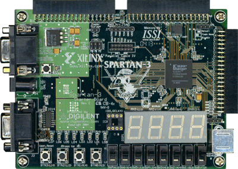

Course project of SJTU's VE370 Introduction to Computer Orgnization. Team of three. Fall 2014.
Works
- Modelled both single-cycle and piplelined MIPS architecture CPU on Spartan 3 using Verilog
- Implemented hazard detection and look forward machanisms
- Tested the pipelined CPU on FPGA and demonstrated its functionality
Board
Xilinx Spartan3 development board.

Design
A hand-draw draft design of the pipelined CPU. Just a classic one.
Results
Successfully demonstrated the functionality of the simulated CPU.
Back